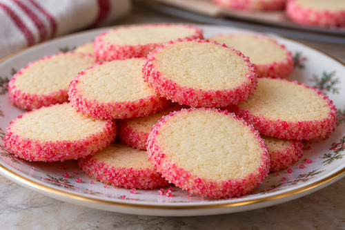

Brysselkex
Brysselkex är klassiska småkakor med vaniljsmak och en dekorativ sockerkant. Kakorna formas som en rulle och skärs i skivor före gräddning.
Antal: 40 kakor

Ingredienser
- 200 g smör
- 1 dl socker
- 1 tsk vaniljsocker
- 4 dl vetemjöl
- 1 msk vatten
Garnering
- strösocker
- röd hushållsfärg (några droppar)
Gör så här
- Sätt ugnen på 175°C
- Hacka samman ingredienserna till degen. Forma degen till rullar, drygt 4 cm i diameter. Häll ut strösocker på ett smörpapper, häll på några droppar röd hushållsfärg och arbeta in med en sked. Rulla rullarna i sockret.
- Lägg rullarna kallt i 30 minuter. Skär dem i skivor och lägg kakorna på bakplåtspappersklädd plåt.
- Grädda mitt i ugnen ca 10 minuter, låt kakorna svalna på plåten.